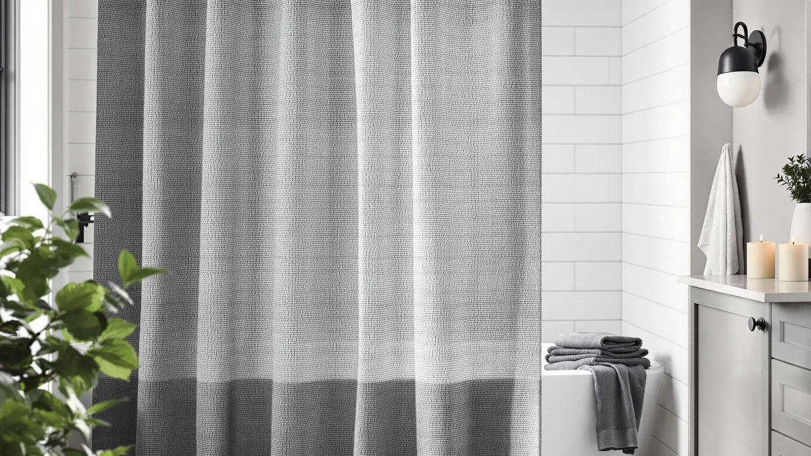

Aersas Extra Long Linen Review (2026): Worth It?
Prices and picks verified as of October 2026. Independent, reader-supported reviews.


Quick Answer
This Aersas Extra Long Linen review found the curtain to be a solid pick for showers that need extra height, with a 72 by 84 inch size that runs 10 inches longer than a standard curtain, all for $25.63. Shoppers who do not need the added length or who want a published review history to lean on should compare it against Poedist's rated alternative below first.
Our pick: Aersas Extra Long Linen Shower ($25.63) Check Price on Amazon
Bottom line: our top pick is the Aersas Extra Long Linen Shower Curtain 84 Inches Long for at $25.63.
Things to Know Before You Buy
- The Aersas Extra Long Linen Shower Curtain ships at 72 inches wide by 84 inches long, 10 inches taller than the standard 72 by 74 inch size most shower curtains use.
- At $25.63, it costs about a dollar more than the three alternatives compared here, which are all priced at $24.99.
- It uses a polyester and PEVA blend finished to look like linen, not woven linen fabric itself, so expect water resistance over natural texture.
- The listing does not publish a star rating or review count, unlike Poedist's set, which carries a 4.6 rating from 746 verified reviews.
This Aersas Extra Long Linen review puts the curtain's 72 by 84 inch size, $25.63 price, and polyester and PEVA build next to three farmhouse-style curtains shoppers often weigh against it. The extra 10 inches of length separates Aersas from most of the field, since a shower with a rod mounted higher than usual, or a tub enclosure taller than a standard stall, can leave a gap at the bottom with a regular-length curtain. That single sizing choice shapes who the Aersas curtain fits and who should look elsewhere.
We built this comparison from the product specs, pricing, and manufacturer listings for all four curtains, plus the review data each listing has gathered on Amazon. The Aersas curtain costs $25.63, roughly a dollar more than Poedist, XOGUIBO, and NDDYCU, which all land at $24.99. That small premium buys the extra length rather than a different material, since all four curtains use some version of a polyester or linen-look blend. A reader who needs the taller size can stop at the specs table; a reader comparing four curtains in the same price band needs the detail that follows.
Why You Should Trust Us
Ilane Tall has covered bathroom textiles and shower hardware for Best Shower Curtains since the site launched, and this Aersas Extra Long Linen review follows the same research process the site uses throughout: comparing manufacturer specs, current pricing, and verified owner feedback rather than running a physical testing lab. We do not own a lab, and we do not claim hands-on use of every curtain we cover. Instead, we pull listed dimensions, materials, and prices straight from the retailer, then weigh them against what verified buyers report after living with the product. Readers can find the full methodology behind every review on this site on our how we research page. We used that same approach for this Aersas Extra Long Linen review, from the pricing table to the final verdict.
How We Compared
Our process for this Aersas Extra Long Linen review starts with the manufacturer's own listing: material, dimensions, and price, cross-checked against the three comparison curtains on the same criteria. From there, we read through verified buyer reviews on Amazon to see how the extra length holds up in real bathrooms and whether the linen-look fabric matches expectations set by the product photos. We did not purchase or install any of the four curtains ourselves. Reviewers consistently note that the added height on the Aersas curtain solves a specific problem, a rod mounted higher than the shower stall was built for, and that feedback shaped how we weighed it against the three shorter, farmhouse-patterned alternatives.
Overview & Specs

Aersas Extra Long Linen Shower
What we like
- 72 by 84 inch size covers showers a standard-length curtain leaves short
- Polyester and PEVA blend resists water better than woven linen
- Priced close to the shorter alternatives in this comparison, at $25.63
Flaws but not dealbreakers
- The listing does not publish a star rating or review count, unlike Poedist's set
- Ships in a single size, with no shorter or wider cut listed for smaller bathrooms
| Material | Polyester / PEVA |
| Size | 72"W x 84"L (Pack of 1) |
Aersas builds this curtain around one idea: extra height. Instead of the standard 72 by 74 inch cut most brands use, this curtain runs 72 inches wide by 84 inches long, a full 10 inches taller, which closes the gap that forms when a rod sits higher than the shower stall was designed for or when a bathroom has a taller-than-average tub enclosure. At $25.63, it costs a little more than the three alternatives in this comparison, each priced at $24.99, and that premium buys the length rather than a different fabric. The curtain uses a polyester and PEVA blend finished with a woven-linen look, a pairing that favors water resistance and easy cleaning over the breathable texture of actual linen.
Because the extra length is the main selling point, shoppers in a standard-height bathroom will not see much benefit over a regular-size curtain, and the roughly dollar premium only makes sense if the added 10 inches solves a real sizing problem. The listing also skips a public star rating or review count, which makes it harder to gauge how the fabric holds up over time compared with Poedist's set, which carries a sizable review history. For a bathroom where a standard curtain consistently falls short of the tub or floor, the Aersas curtain covers that gap at a price close to its shorter competitors.
What We Liked
The biggest draw in this Aersas Extra Long Linen review is the 84 inch length. Most shower curtains top out at 72 or 74 inches, so an extra 10 inches solves a specific, annoying problem: a curtain that stops short of the tub and lets water splash onto the floor. The polyester and PEVA blend also dries faster than cotton or true linen, which matters in a bathroom that does not get much airflow, and the linen-look finish gives it a textured appearance without the maintenance that woven linen demands. At $25.63, the price increase over the three shorter alternatives is small enough that the extra length reads as a practical fix rather than a premium upgrade.
What Could Be Better
The single 72 by 84 inch size is the clearest limit. Shoppers with a standard-height bathroom will pay the small premium for length they do not need, and Aersas has not published a shorter or wider cut for buyers who want the same fabric in a regular size. The listing also lacks a visible star rating or review count, so buyers cannot lean on a track record the way they can with Poedist's set, which has earned a 4.6 rating from 746 verified reviews. That gap does not mean the curtain performs poorly, but it does mean this Aersas Extra Long Linen review has less third-party data to draw on than it would for a more established listing. Shoppers who weigh a review history heavily before buying should treat the missing rating as a real factor, not a minor footnote.
Who Is It For?
The Aersas Extra Long Linen Shower Curtain fits a shopper whose rod sits higher than a standard shower stall was built for, or whose tub enclosure runs taller than average, since the 84 inch length is built specifically to close that gap. It is a reasonable match for anyone who likes the look of linen but wants easier cleaning than true woven fabric offers. Shoppers in a standard-height bathroom who do not need the extra length, or who want a published review history to lean on, should compare it against Poedist, XOGUIBO, or NDDYCU before deciding. A shopper furnishing several bathrooms at once might also browse our best extra long shower curtains roundup for a wider set of tall-curtain options beyond these four.
Alternatives to Consider
If the Aersas Extra Long Linen Shower Curtain's extra length is not something your bathroom needs, or its lack of published reviews rules it out, these three alternatives cover a rated set, a floral farmhouse print, and a striped farmhouse pattern. All three land at the same $24.99 price, a dollar less than Aersas, so swapping between them is mostly a question of pattern and proof rather than budget.

Editor's Pick
Poedist 4 Pcs Bathroom Shower
At $24.99, a dollar less than Aersas, Poedist's 4 Pcs Bathroom Shower set carries a 4.6 rating from 746 verified reviews. It's the only one of the four with a published track record.
$24.99
Check Price on Amazon
Best Value
XOGUIBO Floral Farmhouse Vintage Linen
Priced at $24.99, XOGUIBO's Floral Farmhouse Vintage Linen curtain trades the extra length for a floral farmhouse print. It's a straightforward swap if you want more pattern at a lower price.
$24.99
Check Price on Amazon
Premium Choice
Farmhouse Striped Shower Curtain Taupe
NDDYCU's Farmhouse Striped Shower Curtain in taupe matches XOGUIBO's $24.99 price but swaps the floral print for a striped farmhouse look. It's a middle ground if you want pattern without giving up the standard length.
$24.99
Check Price on AmazonHow big is the Aersas Extra Long Linen Shower Curtain?
It ships at 72 inches wide by 84 inches long, which is 10 inches taller than a standard 72 by 74 inch curtain.
What is the Aersas Extra Long Linen Shower Curtain made of?
It is made from a polyester and PEVA blend finished to look like linen, not actual linen fabric.
Frequently Asked Questions
How big is the Aersas Extra Long Linen Shower Curtain?
It ships at 72 inches wide by 84 inches long, which is 10 inches taller than a standard 72 by 74 inch curtain. That extra length suits showers with a rod mounted higher than usual or a tub enclosure taller than the standard stall.
What is the Aersas Extra Long Linen Shower Curtain made of?
It is made from a polyester and PEVA blend finished to look like linen, not actual linen fabric. The blend favors water resistance and quick drying over the breathable, textured hand of woven linen.
Is the Aersas Extra Long Linen Shower Curtain worth it compared to Poedist, XOGUIBO, and NDDYCU?
At $25.63, it costs about a dollar more than the three alternatives, which are all priced at $24.99. Poedist is the only one of the four with a published rating, a 4.6 from 746 verified reviews, so it is worth comparing if a review history matters more to you than extra length.
Final Verdict
This Aersas Extra Long Linen review comes down to length versus proof. Aersas is the only curtain in this comparison built to the taller 72 by 84 inch size, and that extra 10 inches is its real reason to exist, not its price, since it costs about a dollar more than Poedist, XOGUIBO, and NDDYCU. Poedist undercuts the group at $24.99 and is the only curtain here with a published rating, a 4.6 from 746 verified reviews, which gives it an edge for buyers who want proof before they purchase. For a shower where a standard-length curtain leaves a gap at the tub, the Aersas Extra Long Linen Shower Curtain is the pick worth choosing. Shoppers who do not need the extra height, or who want a verified track record first, should compare Poedist, XOGUIBO, or NDDYCU instead. None of the four curtains in this comparison asks you to spend much more than twenty-five dollars, so the real cost of choosing wrong is a short wait for a return label.
Related Guides
These guides pick up where this Aersas Extra Long Linen review leaves off: more sizing options, more patterns, and more fabric choices.